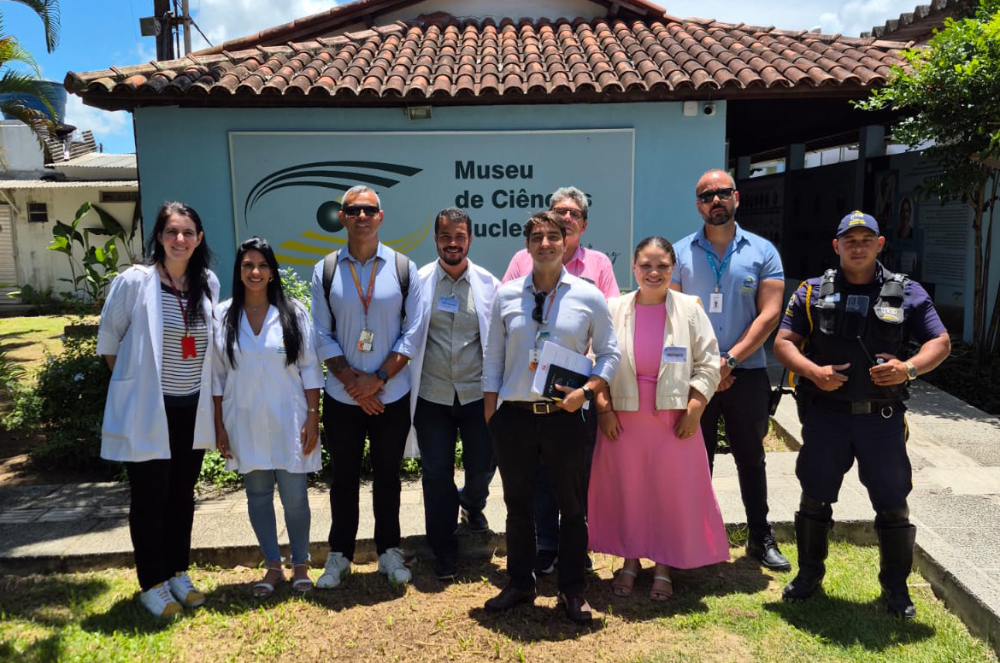
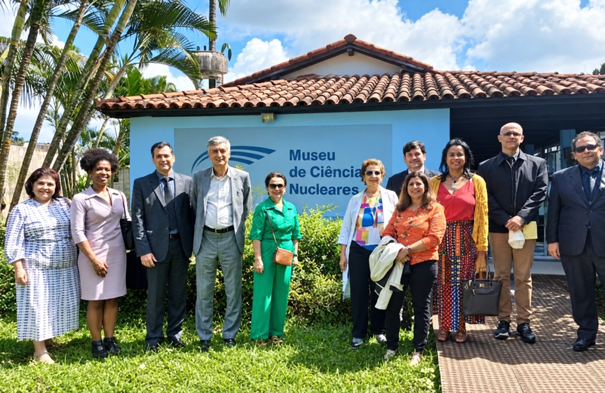

ANSN no DEN/UFPE e no Museu
Após uma inspeção de proteção física nas instalações radiativas do DEN/UFPE, servidores da Autoridade Nacional de Segurança Nuclear conheceram o Museu de Ciências Nucleares. O encontro aproximou a equipe reguladora das atividades de ensino, pesquisa e divulgação científica desenvolvidas na universidade.

Marinha do Brasil
Uma comitiva liderada pelo almirante de esquadra Alexandre Rabello de Faria, Diretor-Geral de Desenvolvimento Nuclear e Tecnológico da Marinha, visitou o DEN/UFPE e o Museu de Ciências Nucleares. O vice-almirante Jorge José de Moraes Rulff também participou da atividade.
No Museu, o grupo foi recebido pela professora Viviane Khoury Asfora, coordenadora-geral, que apresentou a exposição sobre as aplicações pacíficas da energia nuclear.

Registro publicado em
Presidência e diretores da CNEN
O presidente e diretores de vários institutos da Comissão Nacional de Energia Nuclear visitaram o Museu de Ciências Nucleares e foram recebidos pela professora Helen Khoury (em memória), coordenadora-geral do Museu.

Rafael Mariano Grossi, diretor-geral da IAEA
O diretor-geral da Agência Internacional de Energia Atômica visitou o Museu de Ciências Nucleares e os laboratórios do grupo. Foi recepcionado pela professora Helen Khoury (em memória), coordenadora-geral do Museu.
- Reitor da UFPE
- Alfredo Gomes
- Vice-reitor da UFPE
- Moacyr Araújo
- Embaixador do Brasil em Viena
- Carlos Duarte
- Diretor do CRCN-NE
- Carlos Alberto Brayner
Representantes da Marinha e outros convidados completaram o grupo.